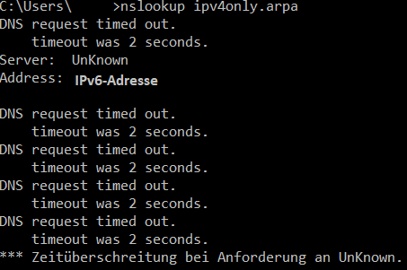

Hallo liebe community,
ich habe vor kurzem mir den neuen TV M + gigakraft 250 Tarif geholt und habe auch dabei einen neuen Router(Internet Fiber Box) bekommen. Ich wollte dann auf meinem Smartphone (Samsung Galaxy S8) mit dem neuen Wlan z.B. die Mein Magenta App oder die Magenta TV App öffnen, die beiden Apps laden bei mir nicht, aber mit den Mobilen Daten schon. Außerdem ist mir aufgefallen, dass Dateien von z.B. Emails nicht herunterladen aber mit den Mobilen Daten schon. Andere Apps wie YouTube, Netflix, Instagram funktionieren mit dem WLAN ohne Probleme. Dasselbe Problem, das manche Apps/Spiele mit dem WLAN nicht laden aber mit den Mobilen Daten schon, habe ich auch auf anderen Smartphones festgestellt.
Daraufhin habe ich mehrere Speedtests(mit der Speedtest App von Speedtest.net) von der WLAN Internet Geschwindigkeit und der Mobilen Daten Internet Geschwindigkeit gemacht.
Dabei kamen folgende Ergebnisse raus:
WLAN: Ping 11ms, Jitter 1ms, Download 140Mbps, Upload 48Mbps, Verlust 0%
Mobile Daten: Ping 14ms, Jitter 6ms, Download 57,5Mbps, Upload 19,1Mbps, Verlust 0%
Mir ist noch aufgefallen, dass auf dem Pc in cmd bei dem nslookup Befehl aus irgendeinem Grund der IPv6 DNS-Server statt dem IPv4 DNS-Server verwendet wird und deshalb die nslookup Anfrage nicht geht.
Wie man sieht ist die WLAN Internet Geschwindigkeit um einiges schneller als die der Mobilen Daten, ich verstehe nicht, warum dann die erwähnten Sachen nicht Laden.
Ist das irgendein Problem mit dem Router? Liegt es vielleicht an dem IPv6 DNS-Server? Muss ich vielleicht irgendetwas in den Einstellungen des Routers umstellen oder muss ich den Router umtauschen?
Kann mir jemand bei diesem Problem helfen?
LG
Welche Netzwerkgeräte hängen im Netzwerk? (Sprich Router, AccessPoints, misteriöse Boxen)
Ich kann mir Grundsätzlich nur schwer vorstellen, dass es ein Problem sein sollte, wenn der DNS Server über das IPv6 Protokoll angesprochen wird. Der sollte trotzdem, wenn gefragt, die IPv4 Adresse zurück liefern.
Was sagt den der Server bei : nslookup ipv4only.arpa
Funktioniert ping 1.1.1.1
Was durch aus sein könnte, ist dass der DNS Server von einem falsch konfigurierten Netzwerkgerät stammt und deshalb Probleme macht.
vor 1 Stunde schrieb IT-Freak:Welche Netzwerkgeräte hängen im Netzwerk? (Sprich Router, AccessPoints, misteriöse Boxen)
Ich kann mir Grundsätzlich nur schwer vorstellen, dass es ein Problem sein sollte, wenn der DNS Server über das IPv6 Protokoll angesprochen wird. Der sollte trotzdem, wenn gefragt, die IPv4 Adresse zurück liefern.
Was sagt den der Server bei : nslookup ipv4only.arpa
Funktioniert ping 1.1.1.1
Was durch aus sein könnte, ist dass der DNS Server von einem falsch konfigurierten Netzwerkgerät stammt und deshalb Probleme macht.
Es sind nur Smartphones, Laptops, ein Fernseher und die Entertain Box 4K mit dem Router(Internet Fiber Box) über WLAN verbunden, es sind keine Netzwerkgeräte wie AccessPoints verbunden.
nslookup ipv4only.arpa funktioniert auch nicht (Bild im Anhang)

ping 1.1.1.1 ja es funktioniert
Meine eigentliche Frage war, warum manche Apps/Spiele nicht mit WLAN auf den Smartphones funktionieren aber mit Mobilen Daten schon, obwohl laut dem Speedtest von Speedtest.net ist die Internet Geschwindigkeit der Mobilen Daten eigentlich um einiges langsamer.
Ich habe auch das selbe Problem. Ich kann zwar Videos auf dem Fernsehr schauen. Jedoch funktionieren die meisten Apps auf dem Handy nicht. Ich kann keine Flüge auf Checkfelix checken, YouTube braucht. ewig um die Thumbnails bzw die Videos zu laden und lauter solche Sachen. Bis ich zum mobilen Netz schalte dann funkioniert alles super.
Ich habe dort bei der Hotline angerufen und die erzählten dass ich das Gerät ein und ausschalten sollte, oder die Frequenz ändern soll. All das hat nicht geholfen. Ich habe auch Skripts programmiert die in einem anderen WLAN im Schnitt 5 Minuten brauchen bis sie gewisse Sachen im Inet durchführen aber bei mir dauert das über 90 Minuten. Weil so viele Pakete rejected werden von der Box... Konntest du es lösen?